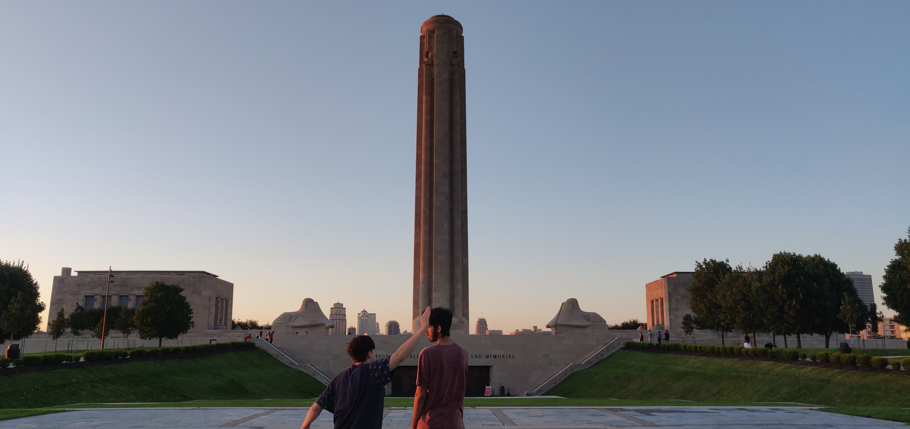

I have been to 8 states in my 18 years of life, including Missouri and Kansas. The other 6 states are Colorado, Oregon, California,
Michigan, Illinois, and Florida. I've only been to 8 out of 50 states, that's only 16%. I plan to do the "50 under 50' thing, and although I realize it might be a little early
to start declaring that I'm going to go to all 50 states, I'm behind!! 10 whole states behind! 8 states in 18 years. NOPE! That should be 18
states in 18 years! Every state I've been to has felt like a small adventure, even going to Kansas and coming back home. Road trips and plane rides
are so much fun for me. I mean aside from the small stress of maybe getting into an accident. Obviously, eventually I would love to go to a different
country, even if it's just Canada or Mexico, but for now I'm gonna stay focused on the states! (Unless an opportunity allows me to leave the country.)
Staying focused on one thing at a time helps me reach my goal!
Kansas City, Missouri
Although Missouri is the state that I was born in and currently live in, it's definitely the most interesting
part of my life. Starting from the beginning, I only attended 3 schools; Woodland Elementary School from kindergarten to 1st grade, Frontier School
of Innovation from 2nd grade to freshman year (9th grade), after a month or so of highschool I decided to go into homeschooling.
While I was homeschooled, I graduated early. I mean, it was only a year early but it was still early!

I will provide pictures for every place I've been! Trust me. I have lots.